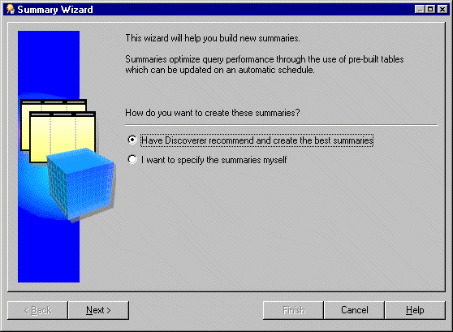
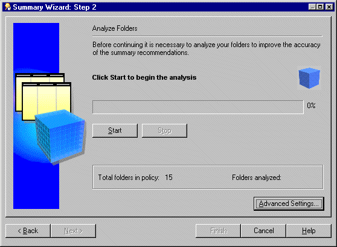
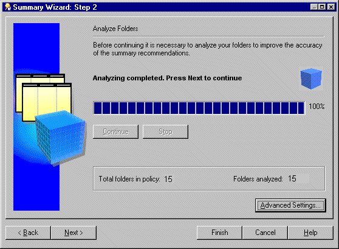
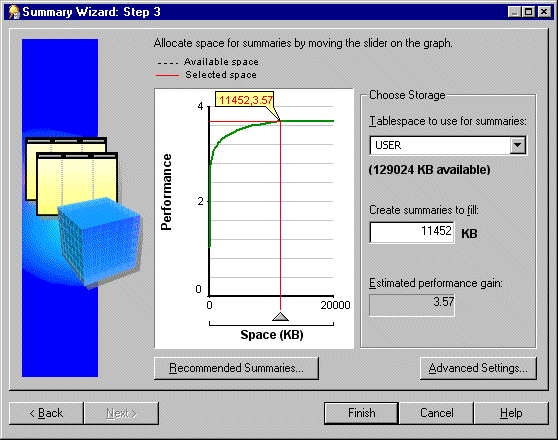
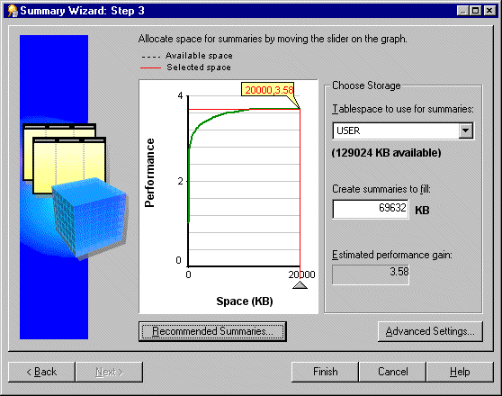

10g (9.0.4)
Part Number B10270-01
Library |
Contents |
Index |
| Oracle Discoverer Administrator Administration Guide (Online Help) 10g (9.0.4) Part Number B10270-01 |
|
This chapter explains summary folders and how you manage them using Discoverer Administrator, and contains the following topics:
Discoverer uses two kinds of folders:
Discoverer folders are classified as simple, complex, or custom. For more information, see Chapter 5, "What are folders?".
Discoverer uses summary folders to improve query response times for end users.
Summary folders are a representation of queried data (created in Discoverer Administrator) that has been saved for reuse. The data is stored in the database in one of the following (depending on the version of Oracle):
Discoverer uses materialized views to store summarized data in Oracle 8.1.7 (or later) Enterprise Edition databases.
Discoverer uses tables to store summarized data in Oracle Standard Edition databases.
The tables created by Discoverer to store summarized data are called Discoverer summary tables. For more information about Discoverer summary tables, see "What are Discoverer summary tables?".
Summary folders improve the response time of a query because the query accesses pre-aggregated and pre-joined data rather than querying against the detail database tables.
You can also direct Discoverer to use summary folders based on tables containing summary data that have been created by another application. These tables are known as external summary tables. You can specify that Discoverer refreshes external summary tables.
You can create summary folders in one of two ways:
The recommended method for creating summary folders in Discoverer is to use Automated Summary Management (ASM).
Discoverer summary tables are database tables created by Discoverer Administrator that contain summarized data. Discoverer summary tables contain pre-aggregated and pre-joined data, and can improve query performance in Discoverer Plus and Discoverer Viewer.
Discoverer automatically recognizes when a summary table is available and rewrites the query to use the summary table. For more information, see Chapter 15, "What is query rewrite?".
For example, when a query is run for the first time in Discoverer Plus it retrieves data from the detail tables. This may require a multiple table join and aggregation over thousands or millions of rows, which could take some time to complete. If Discoverer has created a suitable summary table, the same query retrieves data from the summary table and will return results in a few seconds. Both queries will produce the same results.
For more information about Discoverer and rewriting queries to summary tables with Oracle Standard Edition databases, see Chapter 15, "Example illustrating the advantages of rewriting a query to use a summary table".
Note: Circumstances sometimes prohibit the creation of materialized views and result in the creation of Discoverer summary tables when running against Oracle 8.1.7 (or later) Enterprise Edition databases. For more information, see Chapter 15, "What is different between mapping external summary tables and views to EUL items, with Oracle 8.1.7 (or later) Enterprise Edition databases?".
Materialized views are database objects that contain the results of a query created by an Oracle 8.1.7 (or later) Enterprise Edition database. The query results contain pre-aggregated and pre-joined data and can improve query performance in Discoverer Plus and Discoverer Viewer.
Oracle 8.1.7 (or later) Enterprise Edition databases automatically recognize when a materialized view can be used to satisfy a query request. The database rewrites the query to use the materialized view. Queries are then directed to the materialized view and not to the underlying detail tables or views.
Materialized views have the following characteristics:
Unlike ordinary views, materialized views contain data resulting from a query against one or more detail tables.
The Oracle database maintains data in materialized views by refreshing the materialized views after changes are made to the detail tables.
You can configure Discoverer:
Query rewrite transforms a SQL statement expressed in terms of the detail table into a statement accessing one or more materialized views that are defined on the detail tables. For more information, see Chapter 15, "What is query rewrite?".
For more information about the differences between Discoverer summary tables and materialized views, see:
Automated Summary Management (ASM) is a Discoverer facility that creates and manages summary folders for you.
ASM simplifies the process of summary folder creation and maintenance by offering you a fully automated solution to summary folder management. When run periodically, ASM can automatically refine the summary folders it creates using query statistics gathered by Discoverer from user queries. ASM also provides guidance should you wish to control the specification of default values during summary folder creation/maintenance.
ASM determines how to create summary folders by:
ASM automatically creates and maintains the best set of summary folders based on the above combination.
ASM converts your summary policy into a list of recommended summary folder definitions. You can either implement these recommendations without further intervention (the actual set of summary tables dynamically adjusts with system usage) or execution can be stalled until you have specifically sanctioned one or more of the recommendations.
ASM requires table space to create summary folders but you can adjust how much space in the Summary Wizard (for more information, see "How to run ASM using the Summary Wizard").
Note: ASM works on the EUL as a whole, not just the currently selected business areas. This means that ASM can use folders from all business areas in the current EUL.
To create summary folders with ASM, the following requirements must be met:
Note: For more information about Oracle SET operators, see the Oracle 8i SQL Reference.
Note: A database user created in Discoverer may need additional privileges to enable them to create summary folders. The conditions that determine when this is true are detailed in the following table, that illustrates when a database user created in Discoverer requires additional rpivileges to create summary folders:
| The version of Discoverer and/or database version under which the database user is created? | Does the database user require further privileges to create summary folders? | What action is required? |
|---|---|---|
|
Discoverer 3.1. |
Yes, the database user requires further privileges to create summary folders. |
You must explicitly grant the required privileges to the database user (for more information about how to grant these privileges, see "How to use SQL*Plus to grant the privileges required to create summary folders"). |
|
Discoverer 4i against an Oracle 8.0 database (or earlier). |
Yes, the database user requires further privileges to create summary folders. |
Same action as above. |
|
Discoverer 4i against an Oracle 8.1.7 Enterprise Edition database (or later). |
No, the database user requires no further privileges to create summary folders. |
No action is required. |
There are a number of ways that you can run ASM. The following table shows the different ways that you can run ASM and when to use them:
| How to run ASM? | Why run ASM this way? | For information see |
|---|---|---|
|
Using the Summary Wizard. |
Discoverer leads you through the whole process. |
|
|
Using the Load Wizard after bulk load. |
Enables you to create summary folders during the load of a business area without having to access ASM independently. |
|
|
Using the command line interface. |
Enables you to create summary folders without having to start Discoverer. |
|
|
Using a batch file and the Operating System scheduler. |
Automates the scheduling of ASM summary folder creation through the command line. |
"How to run ASM using a batch file and the operating system scheduler". |
The ASM policy is a set of user defined constraints and options that enable you to control how ASM behaves and what summary folders it produces.
The ASM policy is divided into space options and advanced settings. In many cases you will only need to set the space options.
For more information about space options and advanced settings, see:
Discoverer provides default settings that ensure suitable summary folders are created and maintained without your intervention.
The minimum information required for an ASM policy is a tablespace name and an allocated amount of disc space. The tablespace defaults to the user tablespace, and a default amount of disc space is used. Both of these values can be changed if required (for more information, see "Summary Wizard (ASM): Step 3 Allocate Space dialog").
You must refresh summary data regularly to keep summary tables and materialized views consistent with the database. If the database changes often, summary tables and materialized views need to be refreshed accordingly to keep their data current with the underlying database.
For information about refreshing summary folders see:
Note: Sometimes it is useful to refresh a summary folder after a change has occurred (e.g. the loading of data into a data warehouse). You can use the Discoverer command line interface facility to automatically refresh a summary folder (for more information, see "Oracle Discoverer command line interface").
When a summary folder is refreshed (when running against Oracle 8.1.7 Enterprise Edition databases or later), the database server's own refresh mechanism is used (this can be an incremental refresh) depending on your refresh settings.
Whenever a summary folder is refreshed, the following actions are performed by Discoverer:
You need certain database privileges to run ASM (for more information about the privileges required to run ASM, see "What are the prerequisites for creating summary folders with ASM?").
To see a list of headings that point to more information about the Summary Wizard dialogs, see "Summary Wizard (ASM): List of dialogs".
To start the summary wizard:


Note: To determine which summary folders to create Discoverer analyzes every folder that is to be involved in the summary folder process. Depending on the number and size of folders to be analyzed this could take some time to complete. Discoverer allows you to start and stop this process at your own pace.
Your progress will be displayed during the analyze process.
You might want to pause the analysis to make changes to the default settings (using the Advanced Settings button) before resuming table analysis.
The analysis always resumes from exactly the same point in the process at which the Stop button was clicked.

Note: If some folders cannot be analyzed Discoverer displays the "Not Analyzed dialog".

The graph plots the expected performance gain from allocating a certain amount of space for summary folders.
The information displayed here is calculated during folder analysis (see previous step). If you make changes using any of the tabs in the Change Default Settings dialog Discoverer might recalculate the graph.
For more information about settings see "Summary Wizard (ASM): Change default settings: List of dialog tabs".
Note: We recommend you place summary data in a separate tablespace specifically intended for it. If such a tablespace does not exist, we strongly recommend you do not use the SYSTEM or TEMP tablespaces. For more information, ask your database administrator.
Note: The value beneath the Tablespace to use for summaries field can be less than the value specified in the Create summaries to fill field. This does not matter if you have set your tablespace to autoextend. With your tablespace set to autoextend the extra space needed will be added automatically to the database. If your tablespace is not set to autoextend the value Space (KB) must be less than the available space.

For more information about recommended summaries, see the "Recommended Summaries dialog".
For more information about advanced settings, see "Summary Wizard (ASM): Change default settings: List of dialog tabs".
These settings include those made at the Recommended Summaries dialog or the Change Default Settings dialog.
When you use the Load Wizard to load a business area into the current EUL, you can choose whether to create a set of summary folders for this new business area. If you take this option then suitable summaries will be created after bulk load.
To run ASM after bulk load using the Load Wizard:
For more information, see "Load Wizard: Step 4 dialog".
For more information about the ASM policy, see "What is the ASM policy?"
To run ASM using the command line interface:
For more information about the command line interface, see Chapter 21, "What is the Oracle Discoverer command line interface?". For more information about ASM commands and command modifiers see and Chapter 21, "/asm".
You can run ASM through the batch file/scheduler facility provided by your operating system. This way you specify when you want ASM to run including the scheduled intervals when you want to repeat the process.
By using the command line syntax within a batch file the process can be run automatically overnight or on a weekend. This enables the system to maintain itself.
Before you can run ASM from a batch file you need to do two things:
For more information about ASM command line syntax, see Chapter 21, "/asm".
To learn how to schedule a batch file see your operating system documentation or help.
The summary management feature in Discoverer uses native features in the Oracle database management system (DBMS), and is therefore only available when running against the Oracle database. This feature uses the same highly scalable and reliable processing procedures as the workbook scheduling capability and the setup for both features is similar. These procedures use standard packages in the DBMS called DBMS_JOB.
To enable the processing procedures for summary management in Discoverer you can check the following tasks:
To confirm that DBMS_JOB is installed for summary management:
For example, if SQL*Plus is already running, you might type the following at the command prompt:
SQL> CONNECT dba_user/dba_pw@database;
Where dba_user is the database administrator and dba_pw is the database administrator password.
SQL> select * from all_objects where object_name='DBMS_JOB' and object_type = 'PACKAGE';
If the statement returns no rows, use your database administrator SVRMGRL (Oracle 8.0) to create the necessary packages.
To install DBMS_JOB and create the necessary packages for summary management, for Oracle9i databases:
For example, if SQL*Plus is already running, you might type the following at the command prompt:
SQL> CONNECT sys/sys_pw@database AS SYSDBA;
Where sys is the SYS user and sys_pw is the SYS user password.
SQL> start <ORACLE_HOME>/rdbms/admin/dbmsjob.sql; SQL> start <ORACLE_HOME>/rdbms/admin/prvtjob.plb;
To install DBMS_JOB and create the necessary packages for summary management, for Oracle databases earlier than Oracle9i:
connect internal
SQL> start <ORACLE_HOME>/rdbms/admin/dbmsjob.sql; SQL> start <ORACLE_HOME>/rdbms/admin/prvtjob.plb;
You can use SQL*Plus to grant the privileges required to create summary folders in the following ways:
To use SQL*Plus to manually grant the privileges required to create summary folders, for Oracle9i databases:
For example, if SQL*Plus is already running, you might type the following at the command prompt:
SQL> CONNECT sys/sys_pw@database AS SYSDBA;
Where sys is the SYS user and sys_pw is the SYS user password.
SQL> grant CREATE TABLE to <user>; SQL> grant CREATE VIEW to <user>; SQL> grant CREATE PROCEDURE to <user>; SQL> grant CREATE ANY MATERIALIZED VIEW to <user>; SQL> grant DROP ANY MATERIALIZED VIEW to <user>; SQL> grant ALTER ANY MATERIALIZED VIEW to <user>; SQL> grant GLOBAL QUERY REWRITE to <user> with admin option; SQL> grant ANALYZE ANY to <user>; SQL> grant SELECT ON V_$PARAMETER to <user>;
Note: To grant SELECT ON V_$PARAMETER you must log in as the SYS user. If you are unsure about the SYS user name and password, see your database administrator.
To grant the privileges needed to create summary folders, for Oracle databases earlier than Oracle9i:
connect internal
SQL> grant CREATE TABLE to <user>; SQL> grant CREATE VIEW to <user>; SQL> grant CREATE PROCEDURE to <user>; SQL> grant CREATE ANY MATERIALIZED VIEW to <user>; SQL> grant DROP ANY MATERIALIZED VIEW to <user>; SQL> grant ALTER ANY MATERIALIZED VIEW to <user>; SQL> grant GLOBAL QUERY REWRITE to <user> with admin option; SQL> grant ANALYZE ANY to <user>; SQL> grant SELECT ON V_$PARAMETER to <user>;
Note: To grant SELECT ON V_$PARAMETER you must log in as the SYS user. If you are unsure about the SYS user name and password, see your database administrator.
To use SQL*Plus and the eulasm.sql script to grant the privileges required to create summary folders:
For example, if SQL*Plus is already running, you might type the following at the command prompt:
SQL> CONNECT dba_user/dba_pw@database;
Where dba_user is the database administrator and dba_pw is the database administrator password.
SQL> @'<ORACLE_HOME>\discoverer\util\eulasm.sql'
ENTER value for username: <username>
Note: To grant the privilege SELECT ON V_$PARAMETER you must log in again as the SYS user and manually execute the following commands. If you are unsure about the SYS user name and password, see your database administrator.
For example, if SQL*Plus is already running, you might type the following at the command prompt:
SQL> CONNECT sys/sys_pw@database AS SYSDBA;
Where sys is the SYS user and sys_pw is the SYS user password.
SQL> grant SELECT ON V_$PARAMETER to <user>;
A database user must have enough quota in their default tablespace to create summary tables. The following tasks enable you to determine and tablespace quotas, if necessary.
To determine tablespace quotas, for Oracle9i databases:
For example, if SQL*Plus is already running, you might type the following at the command prompt:
SQL> CONNECT sys/sys_pw@database AS SYSDBA;
Where sys is the SYS user and sys_pw is the SYS user password.
SQL> select * from dba_ts_quotas where username = <user>;
where <user> is the userid of the person using Discoverer Administrator.
To determine tablespace quotas, for Oracle databases earlier than Oracle9i:
connect internal
SQL> select * from dba_ts_quotas where username = <user>;
where <user> is the userid of the person using Discoverer Administrator.
To reset tablespace quotas:
SQL> alter user <user> quota <n> on <tablespace>;
where <user> is the userid of the person using Discoverer Administrator
where <n> is the quota in K(ilobytes) or M(egabytes) or Unlimited
where <tablespace> is the default tablespace name e.g. USERS
A user must not have an object in their schema with the same name as their user name. This task shows you how to look for any objects in your schema that have the same name as your database user name.
To check whether there are any objects in your schema with the same name as your user name, do the following:
For example, if SQL*Plus is already running, you might type the following at the command prompt:
SQL> CONNECT jchan/tiger@database;
Where jchan is the database user and tiger is the database user password.
SQL> select object_name from user_objects where object_name = <user>;
where <user> is the same as the login used to connect to SQL*Plus.
The summary management processes run within the database on the server, and are controlled by parameters in the initialization file of the Oracle DBMS - the INIT<SID>.ORA file.
The parameter job_queue_processes specifies the number of concurrent processes to use to process DBMS_JOB. That is, it controls the number of processing requests that can be handled simultaneously. The default value is zero which means processing requests will NOT be created. You should set it to a minimum of 2, or more if you have any other applications that use DBMS_JOB.
You need more than one job queue process, because if one job fails for any reason, it may keep getting re-submitted and thus prevent everything else in the queue from being completed. If you wish to have 10 simultaneous processing requests handled then you will need to set this to 10.
The INIT<SID>.ORA parameter job_queue_interval (desupported in Oracle9i (and later) Enterprise Edition databases) is the time in seconds which controls how often the job processes process pending jobs. We recommend that you update the 60 second default to at least 10 minutes (a value of 600). Note that this parameter also affects workbook scheduling.
For more information about these parameters, see "What Oracle database features support workbook scheduling?"
To enable the above parameters:
The INIT<SID>.ORA file is held in <ORACLE_HOME>\database. The default name of the file is INITORCL.ORA, where ORCL is the <SID> name.
job_queue_processes = 2 job_queue_interval = 600 (Note: this is equivalent to 10 minutes)
|
|
 Copyright © 2003 Oracle Corporation. All Rights Reserved. |
|